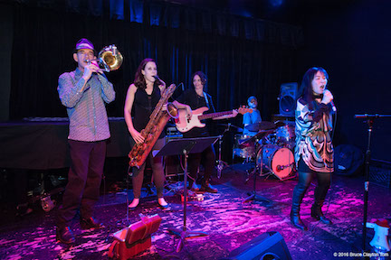

I'm currrently a student at Epicodus, which is a rather unique progamming school. Here are some projects I have written or contributed to:

I started playing the trombone when I was nine and it shaped the rest of my life.
I have a band How Things Work, which is an indie rock band with:
instead of the usual guitar.
Playing the trombone in rock bands meant I had to build my own gear. If you play a guitar, and you need an amp or something, you go to Guitar Center. There is no Trombone Center. I built my own amps and equipment so I could go onstage and plug in and play through a stack like any self-respecting guitarist. The photo (right) is of a microphone I made, part of a preamp system for my band that gives a proper signal to the club sound board from the horns. I love building this stuff, almost as much as playing the horn.
Being a trombonist meant I had to pick up a lot of other skills to pay the rent.
I've spent the last twenty years working as a:
as well as recording location sound for film.
This emphasais on function, design, and construction is what led me to pursue programming. I am very interested in the underlying structure of software and how the machine actually works.